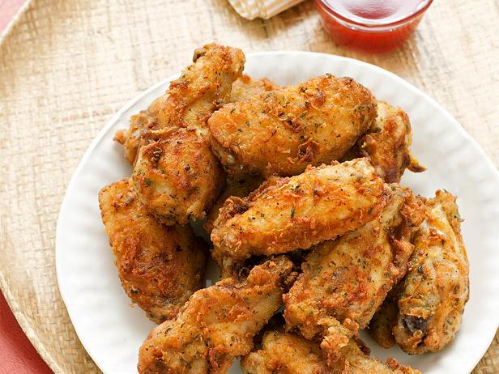

A buffet (UK: /ˈbʊfeɪ/, US: /bəˈfeɪ/, from French: sideboard) is a system of serving meals in which food is placed in a public area where the diners generally serve themselves.[1] Buffets are offered at various places including hotels, restaurants and many social events. Buffet restaurants normally offer all-you-can-eat (AYCE) food for a set price. Buffets usually have some hot dishes, so the term cold buffet (see Smörgåsbord) has been developed to describe formats lacking hot food. Hot or cold buffets usually involve dishware and utensils, but a finger buffet is an array of foods that are designed to be small and easily consumed only by hand, including cupcakes, slices of pizza, foods on cocktail sticks, etc.
The essential feature of the various buffet formats is that the diners can directly view the food and immediately select which dishes they wish to consume, and usually also can decide how much food they take. Buffets are effective for serving large numbers of people at once, and are often seen in institutional settings, such as business conventions or large parties.
Bicol Express (Bikol: Sinilihan) is a popular Filipino dish which was popularized in the district of Malate, Manila but made in traditional Bicolano style. ... Bicol Express was named after the passenger train service from Manila to the Bicol region, a region in the Philippines famous for its spicy cuisine.
Love It!
The first plate of wings was served in 1964 at a family-owned establishment in Buffalo called the Anchor Bar. The wings were the brainchild of Teressa Bellissimo, who covered them in her own special sauce and served them with a side of blue cheese and celery because that's what she had available.

Deliciouso!
Chill the custard in the freezer for 30 to 45 minutes, until it is just beginning to harden. Gradually stir in the durian paste, a tablespoon at a time. Either continue freezing, stirring several times throughout, or finish the ice cream in an ice cream maker.